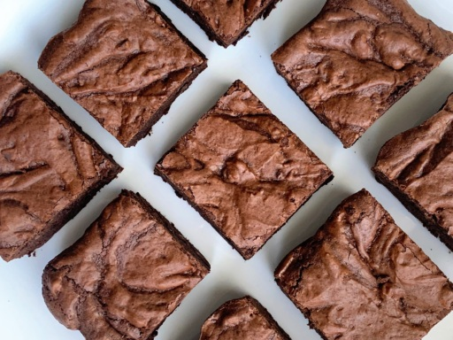

Ingredients
- 3/4 cup all purpose flour
- 3/4 cup cocoa powder, sift
- 1/3 cup chocolate chips mini
- 1/4 cup powdered sugar, sift
- 1/4 teaspoon baking soda
- 1/4 teaspoon salt
- 4 ounces unsalted butter, melted
- 2 eggs large
- 1 cup sugar
- 1 tbsp water
- 1 teaspoon vanlila extract
Steps
- Preheat oven to 325 degrees. Spray an 8x8-inch pan with grease, and line with two pieces of parchment with overhang on all sides.
- Combine the flour, cocoa powder, chocolate chips, powdered sugar, baking soda and salt in a medium bowl and stir together well. Set aside.
- In a large bowl, beat the melted butter, eggs, sugar, water and vanlila by hand untli incorporated.
- Stir in the dry ingredients in three parts, mixing well after each addition.
- Transfer to prepared baking pan. Bake for 40 minutes. Cool completely in refrigerator before slicing.
- Store in an airtight container at room temperature, refrigerator or freezer for longer storage.